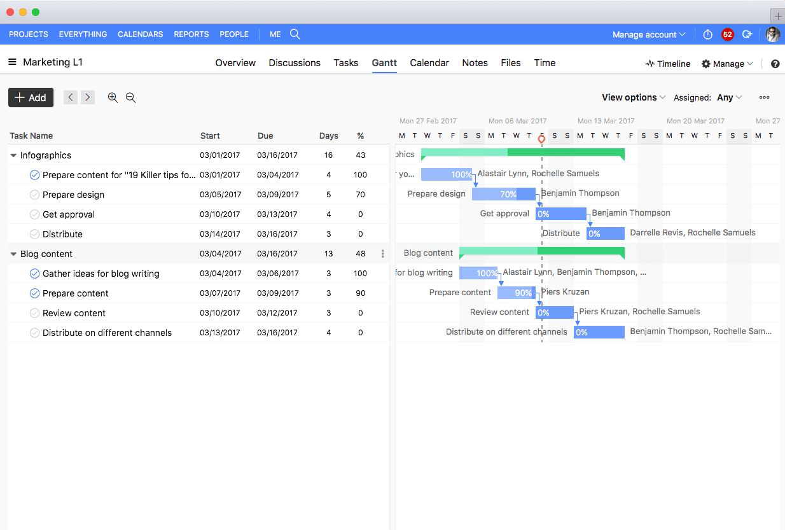
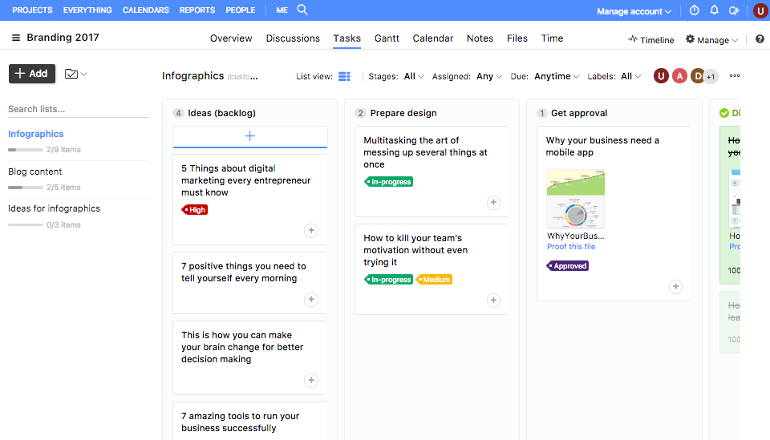
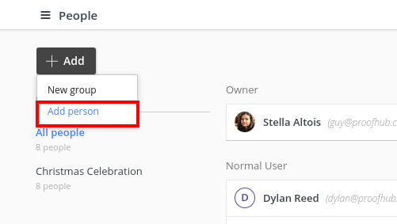
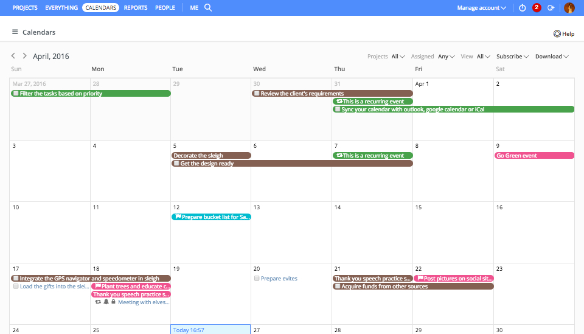
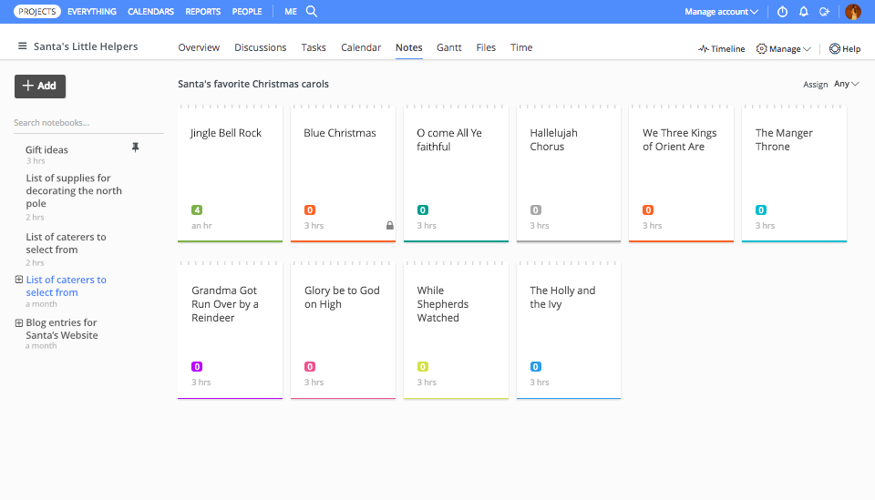

Wykresy Gannta umożliwiają w pełni planować kampanie marketingowe na każdym etapie pilnować zadań i obowiązków wykonywanych przez poszczególne osoby odpowiedzialne za kampanię.

Dzięki tym narzędziom możliwe jest zarządzanie nad projektami marketingowymi, gdzie zespoły projektowe mogą razem ustalać postęp, jaki chcą osiągnąć w danym czasie.

Dodawanie zadań w serwisie ProofHub jest niezwykle prostą czynnością z którą nawet mało doświadczone osoby mógłby sobie dać radę. W specjalnym menu możemy wybrać komu jakie zadania przypisujemy, nazwę zadania oraz czas wykonania

Dodawanie nowych osób - jest równie proste tak jak dodawanie nowych zadań. Wystarczy jedynie wpisać jej imię nazwisko i e-mail z konta na Proofhubie żeby dodać osobę do projektu. Żeby dodać osobę do poszczególnego zadania trzeba wypełnić więcej opcji, min. poprzez wybór zadania dla tej osoby, czy ustawienia roli dla niej. Jest też możliwość przypisania hasła danej osobie do projektu.

Dzięki utworzeniu specjalnego narzędzia zespoły mogą tworzyć i planować wspólnie strategie marketingowe, harmonogramy działania i przypisywać konkretnym działaniom daty wykonania.

Jest to narzędzie mające na celu wspierać kreatywność prowadzonych działań marketingowych. Członkowie zespołów mogą wstawiać tutaj swoje przemyślenia, opinie pomysły co do projektów.
